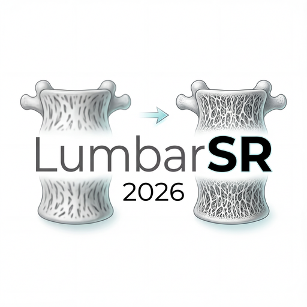
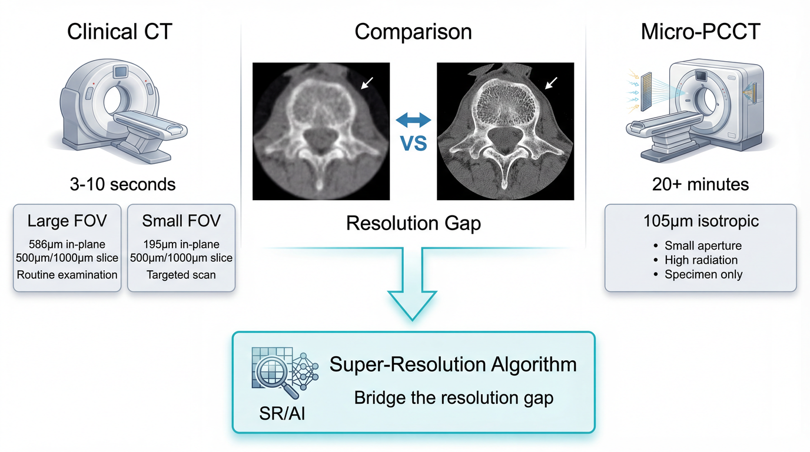
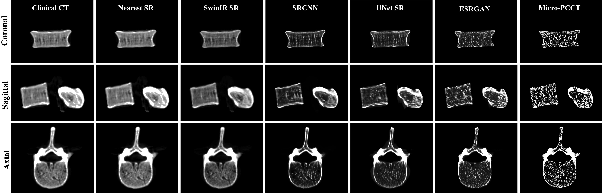

LumbarSR
A paired clinical CT and photon-counting Micro-PCCT benchmark for lumbar vertebral super-resolution, released with aligned BoneMask ROIs, reference registration, visualization assets, and public benchmark tables.
Overview
LumbarSR is a paired clinical CT and Micro-PCCT benchmark for lumbar vertebral super-resolution, containing 30 ex vivo human lumbar samples scanned with multiple clinical CT configurations and matched 105 μm Micro-PCCT.
The task is to reconstruct bone microstructure from routine clinical CT into Micro-PCCT-like resolution for musculoskeletal imaging research.

Tri-planar views and 3D bone rendering across different CT resolutions
Click to view at higher resolution (Original ultra-high resolution is not available online)
Task Definition
Input: clinical CT with soft tissue kernel at two fields of view. Output: 105 μm isotropic Micro-PCCT.
| Field of View | In-plane Resolution | Slice Thickness |
|---|---|---|
| Small FOV (High Resolution) | 195 μm | 500 μm / 1000 μm |
| Large FOV (Standard) | 586 μm | 500 μm / 1000 μm |

Pipeline overview (Full resolution)
Super-Resolution Visualization
The following figure shows a representative tri-planar comparison for Lumbar_26 using
586X_586Y_1000Z_S as input. Columns from left to right are Clinical CT, Nearest, SwinIR, SRCNN, UNet, ESRGAN,
and the Micro-PCCT target.

Open the PDF version for the full-resolution figure.
Dataset
Download
Download Dataset from Zenodo (ZIP parts) DOI: 10.5281/zenodo.19404387

The dataset is distributed on Zenodo as split ZIP archives. Please use the Zenodo record for the current file list and download instructions.
Directory Structure
LumbarSR/
├── original_dicom/ # Original DICOM data
│ ├── Lumbar_01/
│ │ ├── clinical_ct/
│ │ │ ├── 195X_195Y_500Z_S/ # Small FOV, soft kernel
│ │ │ ├── 195X_195Y_1000Z_S/ # Small FOV, soft kernel
│ │ │ ├── 586X_586Y_500Z_S/ # Large FOV, soft kernel
│ │ │ └── 586X_586Y_1000Z_S/ # Large FOV, soft kernel
│ │ └── micro_ct/
│ │ └── *.dcm # Original Micro-PCCT DICOM
│ ├── Lumbar_02/
│ │ └── ...
│ └── Lumbar_30/
│ └── ...
├── RegisteredData/ # Processed NIfTI data (ready to use)
│ ├── Lumbar_01/
│ │ ├── Lumbar01_ClinicalCT_195X_195Y_500Z_S_registered.nii.gz
│ │ ├── Lumbar01_ClinicalCT_195X_195Y_1000Z_S_registered.nii.gz
│ │ ├── Lumbar01_ClinicalCT_586X_586Y_500Z_S_registered.nii.gz
│ │ ├── Lumbar01_ClinicalCT_586X_586Y_1000Z_S_registered.nii.gz
│ │ └── Lumbar01_MicroPCCT_105um.nii.gz # Ground truth
│ ├── Lumbar_02/
│ │ └── ...
│ └── Lumbar_30/
│ └── ...
├── BoneMask/ # Released binary bone ROI aligned to RegisteredData
│ ├── Lumbar_01/
│ │ ├── Lumbar01_MicroPCCT_105um_BoneMask.nii.gz
│ │ ├── Lumbar01_ClinicalCT_195X_195Y_500Z_B_registered_BoneMask.nii.gz
│ │ ├── Lumbar01_ClinicalCT_195X_195Y_500Z_S_registered_BoneMask.nii.gz
│ │ ├── Lumbar01_ClinicalCT_195X_195Y_1000Z_B_registered_BoneMask.nii.gz
│ │ ├── Lumbar01_ClinicalCT_195X_195Y_1000Z_S_registered_BoneMask.nii.gz
│ │ ├── Lumbar01_ClinicalCT_586X_586Y_500Z_B_registered_BoneMask.nii.gz
│ │ ├── Lumbar01_ClinicalCT_586X_586Y_500Z_S_registered_BoneMask.nii.gz
│ │ ├── Lumbar01_ClinicalCT_586X_586Y_1000Z_B_registered_BoneMask.nii.gz
│ │ └── Lumbar01_ClinicalCT_586X_586Y_1000Z_S_registered_BoneMask.nii.gz
│ └── ...
└── README.md
RegisteredData/ is the recommended starting point. BoneMask/ provides binary ROIs aligned to the released NIfTI volumes.
Each sample contains one MicroPCCT mask and eight sequence-level clinical masks.
Data Statistics
| Split | Samples | Clinical CT | Micro-PCCT |
|---|---|---|---|
| Training / development | 25 | Available | Available |
| Reference test set | 5 | Available | Available |
Input Sequences
For each sample, we provide 4 clinical CT sequences with soft tissue kernel:
| Sequence | Resolution | Slice Thickness | FOV |
|---|---|---|---|
195X_195Y_500Z_S |
195 μm | 500 μm | Small |
195X_195Y_1000Z_S |
195 μm | 1000 μm | Small |
586X_586Y_500Z_S |
586 μm | 500 μm | Large |
586X_586Y_1000Z_S |
586 μm | 1000 μm | Large |
Micro-PCCT targets are released as int16 NIfTI volumes at 105 μm isotropic resolution.
Repository Contents
| Directory | Status | Description |
|---|---|---|
baseline/ |
Public | Rigid registration baseline based on ANTs, including register_ants.py and batch_register.py |
methods/ |
Public | Super-resolution method scripts and usage notes |
evaluation/ |
Public | Image quality evaluation and trabecular summary scripts |
docs/ |
Public | Website pages, visualization assets, and benchmark result summaries |
The public benchmark reports registered clinical CT, nearest interpolation, SRCNN, UNet, ESRGAN, and SwinIR under the released BoneMask-ROI protocol.
Usage details are documented in methods/ and evaluation/.
Evaluation
CT Window Settings
All metrics are computed under three different CT window settings:
| Window | Window Center (WC) | Window Width (WW) | Purpose |
|---|---|---|---|
| Raw | - | - | Original HU values (-1024 ~ 3071) |
| Bone | 400 | 1800 | Bone structure visualization |
| Soft Tissue | 40 | 400 | Soft tissue visualization |
Metrics
Image-quality evaluation reports PSNR, SSIM, and MAE within the released BoneMask ROI.
Baseline Performance
Public benchmark tables cover registered clinical CT, Nearest, SRCNN, UNet, ESRGAN, and SwinIR.
Training uses Lumbar_01 to Lumbar_25; evaluation reports mean ± standard deviation on Lumbar_26 to Lumbar_30.
Registration Evaluation
Registration quality is reported within the released BoneMask ROI using Dice, HD95, and HD.
| Method | ROI | Dice ↑ | HD95 ↓ | HD ↓ |
|---|---|---|---|---|
| ANTs rigid baseline (195X_195Y_500Z_B) | BoneMask ROI | 0.9826 ± 0.0017 | 0.2266 ± 0.0131 mm | 1.1476 ± 0.5960 mm |
| ANTs rigid baseline (586X_586Y_500Z_B) | BoneMask ROI | 0.9811 ± 0.0023 | 0.2887 ± 0.0358 mm | 0.9095 ± 0.2725 mm |
| ANTs rigid baseline (overall) | BoneMask ROI | 0.9818 ± 0.0021 | 0.2576 ± 0.0411 mm | 1.0285 ± 0.4785 mm |
Bone Morphometry
The public benchmark reports ROI-based bone morphometry in the released BoneMask-defined VOI, together with paired comparison against Micro-PCCT.
| Category | Metrics |
|---|---|
| Core trabecular morphometry | BV/TV, Tb.Th, Tb.Sp, Tb.N |
| Released VOI definition | derived from the released BoneMask and used consistently for all public morphometry statistics |
Current Public Subset: 195X_195Y_1000Z_S
| Method / Data | BV/TV | Tb.Th (mm) | Tb.Sp (mm) | Tb.N (mm^-1) |
|---|---|---|---|---|
| Micro-PCCT reference | 0.2208 ± 0.0174 | 0.2573 ± 0.0141 | 0.3647 ± 0.0192 | 0.8608 ± 0.0881 |
| Registered clinical CT baseline | 0.0055 ± 0.0029 | 0.5837 ± 0.1179 | 4.1319 ± 1.1314 | 0.0097 ± 0.0056 |
| SRCNN | 0.0605 ± 0.0212 | 0.7673 ± 0.0865 | 0.9809 ± 0.2448 | 0.0773 ± 0.0202 |
| UNet | 0.0931 ± 0.0235 | 0.4324 ± 0.0550 | 0.4565 ± 0.0574 | 0.2133 ± 0.0346 |
| ESRGAN | 0.1330 ± 0.0239 | 0.2740 ± 0.0112 | 0.3941 ± 0.0249 | 0.4841 ± 0.0773 |
| SwinIR | 0.0415 ± 0.0140 | 0.7371 ± 0.0845 | 1.3594 ± 0.3529 | 0.0549 ± 0.0127 |
Current Public Subset: 586X_586Y_1000Z_S
| Method / Data | BV/TV | Tb.Th (mm) | Tb.Sp (mm) | Tb.N (mm^-1) |
|---|---|---|---|---|
| Micro-PCCT reference | 0.2208 ± 0.0174 | 0.2573 ± 0.0141 | 0.3647 ± 0.0192 | 0.8608 ± 0.0881 |
| Registered clinical CT baseline | 0.0026 ± 0.0018 | 0.5338 ± 0.1322 | 5.0502 ± 1.8719 | 0.0053 ± 0.0044 |
| SRCNN | 0.1271 ± 0.0204 | 0.6565 ± 0.0739 | 0.4540 ± 0.0425 | 0.1928 ± 0.0104 |
| UNet | 0.1227 ± 0.0254 | 0.4639 ± 0.0467 | 0.4421 ± 0.0459 | 0.2624 ± 0.0300 |
| ESRGAN | 0.1506 ± 0.0209 | 0.2730 ± 0.0089 | 0.3710 ± 0.0160 | 0.5511 ± 0.0702 |
| SwinIR | 0.0486 ± 0.0144 | 0.4010 ± 0.0203 | 0.9216 ± 0.2053 | 0.1198 ± 0.0305 |
Paired Statistical Comparison vs Micro-PCCT
One-sided exact Wilcoxon signed-rank tests are reported against Micro-PCCT, paired by case and shown separately for each FOV (n = 5; smallest attainable exact one-sided p = 0.03125).
Cell format: signed mean delta (pred - Micro-PCCT) / exact one-sided p value.
Directions: BV/TV and Tb.N test pred < Micro-PCCT;
Tb.Th and Tb.Sp test pred > Micro-PCCT.
Compact Paired Comparison: 195X_195Y_1000Z_S
| Method | BV/TV (Δ / p) | Tb.Th (Δ / p) | Tb.Sp (Δ / p) | Tb.N (Δ / p) |
|---|---|---|---|---|
| Registered clinical CT baseline | -0.2125 / 0.03125 | +0.3761 / 0.03125 | +3.8776 / 0.03125 | -0.8398 / 0.03125 |
| Nearest | -0.2125 / 0.03125 | +0.3761 / 0.03125 | +3.8776 / 0.03125 | -0.8398 / 0.03125 |
| SRCNN | -0.1556 / 0.03125 | +0.5861 / 0.03125 | +0.5512 / 0.03125 | -0.7762 / 0.03125 |
| UNet | -0.1217 / 0.03125 | +0.1907 / 0.03125 | +0.0951 / 0.03125 | -0.6357 / 0.03125 |
| ESRGAN | -0.0878 / 0.03125 | +0.0167 / 0.03125 | +0.0293 / 0.09375 | -0.3767 / 0.03125 |
| SwinIR | -0.1793 / 0.03125 | +0.4798 / 0.03125 | +0.9947 / 0.03125 | -0.8059 / 0.03125 |
Compact Paired Comparison: 586X_586Y_1000Z_S
| Method | BV/TV (Δ / p) | Tb.Th (Δ / p) | Tb.Sp (Δ / p) | Tb.N (Δ / p) |
|---|---|---|---|---|
| Registered clinical CT baseline | -0.2167 / 0.03125 | +0.2665 / 0.03125 | +5.0664 / 0.03125 | -0.8493 / 0.03125 |
| Nearest | -0.2167 / 0.03125 | +0.2665 / 0.03125 | +5.0664 / 0.03125 | -0.8493 / 0.03125 |
| SRCNN | -0.0864 / 0.03125 | +0.4665 / 0.03125 | +0.0593 / 0.09375 | -0.6719 / 0.03125 |
| UNet | -0.0920 / 0.03125 | +0.2314 / 0.03125 | +0.0863 / 0.03125 | -0.5960 / 0.03125 |
| ESRGAN | -0.0702 / 0.03125 | +0.0156 / 0.03125 | +0.0063 / 0.40625 | -0.3097 / 0.03125 |
| SwinIR | -0.1722 / 0.03125 | +0.1437 / 0.03125 | +0.5568 / 0.03125 | -0.7410 / 0.03125 |
Recommended Usage Policy
- Official Data: Use the released LumbarSR training set as the core development data.
- Disclosure: External data, pre-trained models, and synthetic data are allowed, but should be documented clearly.
- Integrity: Avoid hidden-ground-truth usage or any form of test leakage.
Organizers
- Ping Wang* - Institute of Diagnostic and Interventional Radiology, Shanghai Sixth People's Hospital Affiliated to Shanghai Jiao Tong University School of Medicine
- Ruipeng Zhang* - Institute of Diagnostic and Interventional Radiology, Shanghai Sixth People's Hospital Affiliated to Shanghai Jiao Tong University School of Medicine
- Mengfei Wang - School of Information and Intelligent Science, Donghua University
- Zhenzhen Cao - Basic Medical Science, Kunming Medical University
- Xuefei Hu - Basic Medical Science, Tarim University School of Medicine
- Yuehua Li✉ - Institute of Diagnostic and Interventional Radiology, Shanghai Sixth People's Hospital Affiliated to Shanghai Jiao Tong University School of Medicine (liyuehua77@sjtu.edu.cn)
* Equal contribution
Contact
For questions about the dataset or benchmark, please contact:
Email: zhangrp@sjtu.edu.cn
GitHub: @FrankZhangRp
Citation
If you use this dataset, please cite:
@misc{lumbarsr2026,
title={LumbarSR: A Paired Clinical CT and Photon-Counting Micro-CT Dataset for Human Lumbar Vertebrae},
author={Wang, Ping and Zhang, Ruipeng and Wang, Mengfei and Cao, Zhenzhen and Hu, Xuefei and Li, Yuehua},
year={2026},
url={https://github.com/FrankZhangRp/LumbarSR-Challenge}
}LumbarSR: A Paired Clinical CT and Photon-Counting Micro-CT Dataset for Human Lumbar Vertebrae